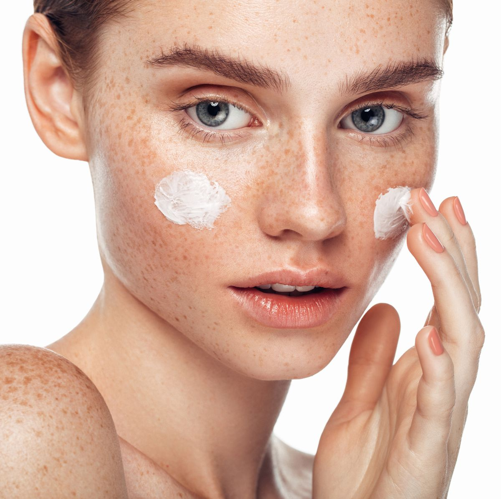
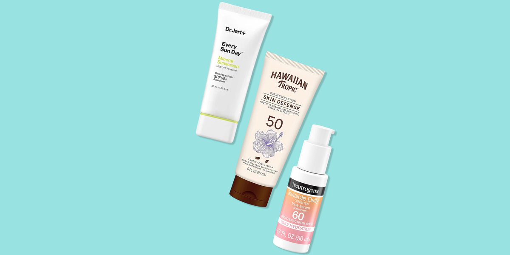

SKIN CARE TIPS DERMATOLOGISTS USE
Ingredients
Acne Fighters
Azelaic Acid
What it does: Produced by a naturally occurring yeast on skin, this exfoliating ingredient reduces hyperpigmentation, fades dark spots, and kills acne- and rosacea-causing bacteria.
Who it's for: All skin types, but particularly acne-prone skin.
How to use it: Twice a day (morning and night) or once every other day for sensitive skin.
FYI: Start slow — azelaic acid may cause drying or peeling on application sites.
READ MORE
Beta-Hydroxy Acids (BHAs)
What it does: BHAs are oil-soluble acids that plunge deep into pores to target oil glands and decrease oil secretion
Who it's for: Acne-prone and oily skin, since it decreases oil secretion and nixes dead skin to prevent pimples.
How to use it: Begin with twice-weekly use at a low concentration, and increase potency and frequency as tolerated.
FYI: While it's a star on oily skin, it may cause flaking at first, particularly on dry or sensitive skin.
READ MORE
Polyhydroxy Acid
What it does: A gentle chemical exfoliant, polyhydroxy acid (PHA) sloughs dead skin cells away from the surface for a smoother and more even texture.
Who it’s for: Milder, less irritating and more hydrating than exfoliant cousins AHA and BHA, PHA doesn’t penetrate skin as deeply but still exfoliates which makes it perfect for sensitive skin, rosacea or eczema.
How to use it: PHA plays nicely with other active ingredients like vitamin C or retinol — start slow at first to prevent irritation. Most people can use PHAs three to four times a week without issue. One exception: Use once weekly if you use other acids like AHAs or BHAs.
FYI: The most common PHAs are gluconolactone, galactose and lactobionic acid.
Anti-agers
These heavy-hitting ingredients smooth out wrinkles and fine lines by ramping up collagen production and cellular turnover for youthful, bright-looking, even-toned skin. Since skin will be freshly exfoliated, it may feel irritated at first: Start slow, avoid using alongside other exfoliants and always follow up with SPF. READ MORE
Alpha-hydroxy acids (AHAs)
What it does: AHAs are water-soluble acids derived from fruits or sugar cane that exfoliate dull, dry skin and stimulate collagen production to lessen wrinkles.
Who it's for: Anyone whose main concern is anti-aging, or those with dry skin.
How to use it: Start with a lower concentration and work up to daily use, as tolerated.
FYI: AHAs increase skin’s sensitivity to UV rays, so use SPF every day. AHAs also may cause superficial chemical burns on darker skin tones.
READ MORE
Beta-Hydroxy Acids (BHAs)
What it does: BHAs are oil-soluble acids that plunge deep into pores to target oil glands and decrease oil secretion
Who it's for: Acne-prone and oily skin, since it decreases oil secretion and nixes dead skin to prevent pimples.
How to use it: Begin with twice-weekly use at a low concentration, and increase potency and frequency as tolerated.
FYI: While it's a star on oily skin, it may cause flaking at first, particularly on dry or sensitive skin.
READ MORE
Polyhydroxy Acid
What it does: A gentle chemical exfoliant, polyhydroxy acid (PHA) sloughs dead skin cells away from the surface for a smoother and more even texture.
Who it’s for: Milder, less irritating and more hydrating than exfoliant cousins AHA and BHA, PHA doesn’t penetrate skin as deeply but still exfoliates which makes it perfect for sensitive skin, rosacea or eczema.
How to use it: PHA plays nicely with other active ingredients like vitamin C or retinol — start slow at first to prevent irritation. Most people can use PHAs three to four times a week without issue. One exception: Use once weekly if you use other acids like AHAs or BHAs.
FYI: The most common PHAs are gluconolactone, galactose and lactobionic acid.
What it does:
Both an antioxidant and an anti-inflammatory, vitamin E prevents skin discoloration, protects against damage and signs of aging caused by free radicals and staves off acne breakouts.
Who it’s for:
Products formulated with vitamin E work well for most skin types, but it’s particularly helpful for acne-prone, discolored, or aging skin.
How to use it:
Drier skin types can apply pure vitamin E oil directly to the skin once to twice daily. Combination and oily skin types may want to opt for a product that's formulated with the ingredient.
FYI:
Vitamin E pops up as “tocopherol” on some ingredient labels. If you have oily skin, don’t use straight vitamin E oil on its own as it might exacerbate clogged pores.
Hydrators

If your skin is dry, sensitive, prone to redness, or plagued by eczema, these calming, nourishing hydrators will be your saviors. Use them alone and/or immediately following any exfoliation regimen (above!).
Ceramides
What it does:
This type of naturally-occurring fat holds skin cells together to help form a waterproof seal and healthy skin barrier that keeps skin hydrated.
Who it's for:
Everyone, but particularly those with mature skin and eczema-prone, irritated, or dry, itchy skin.
How to use it:
Apply daily in a lotion or cream alone or following retinoids, hydroxyacids, and exfoliants to stave off potential irritation.
FYI:
Ceramides are naturally-occurring, but deplete with age and poor skin health. Luckily, OTC ceramides are bio-identical to what skin naturally produces.
Cica
What it does:
Centella asiatica (a.k.a. cica) is an herb rich in anti-inflammatories that calms redness and irritation, regulates collagen synthesis, and protects against environmental damage.
Who it's for:
Everyone, but particularly those who struggle with acne, rosacea, or severe dryness and sensitivity.
How to use it:
Apply a cica-packed cream or serum to clean skin nightly, when skin is in repair mode.
FYI:
Check the ingredients list — cica, tiger grass, centella asiatica, or madecassoside should be near the top.
Humectants
What it does:
Humectants are water-loving ingredients that draw moisture into skin to help increase moisture content over time.
Who it's for:
Any skin type (even oily skin requires some hydration!), but especially essential for dry skin.
How to use it:
Humectants like glycerin, hylauronic acid, aloe, and urea are most often formulated in moisturizers and creams alongside occlusives and emollients. Apply once to twice daily.
FYI:
Since humectants draw moisture from anywhere, they might increase skin dryness if you live in a very dry environment by absorbing water from the skin instead of the air.
Hyaluronic Acid (HA)
What it does:
A naturally-produced sugar molecule found in our skin, joints, and connective tissue, this gentle humectant attracts up to 1,000 times its weight in water to hydrate, smooth, and plump dry or wrinkled skin.
Who it's for:
All skin types (allergic reactions are rare since it's naturally occurring), but particularly helpful for dry or mature skin in need of deep hydration.
How to use it:
Most often found in products that are left on the skin (e.g. creams, lotions, serums, masks), HA can be used twice daily even on sensitive skin.
FYI:
Skin produces less natural HA with age, which contributes to sallowness and wrinkles. Check skincare labels for mention of "sodium hyaluronate."
Niacinamide
What it does:
This water-soluble derivative of niacin or vitamin B3 (an essential vitamin not produced by the body) is lauded its anti-inflammatory, soothing, brightening, and skin tone-evening benefits.
Who it's for:
All skin types; it can help reduce sebum production on oily skin, retain moisture on dry skin, and foster ceramide production to repair skin compromised by rosacea or eczema.
How to use it:
It's typically formulated into leave-on products like serums and creams and best used twice per day.
Caution:
The way niacinamide works in the skin is not fully understood, but several studies have shown clinical skincare benefits.
Occlusives
What it does:
These moisturizing agents form a protective layer on skin’s surface to prevent moisture loss and shield skin from external irritants like friction, cold, wind and pollen.
Who it’s for:
Thick and heavy, occlusives are best for people for dry, dehydrated, sensitive or reactive skin.
How to use it:
Alongside humectants, occlusives are present in most hydrating skincare products, from lip balm to moisturizer. They’re safe to use on dry skin multiple times daily.
FYI:
Petrolatum, silicones, shea butter and beeswax are all occlusives.